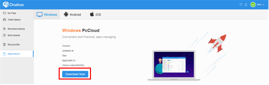
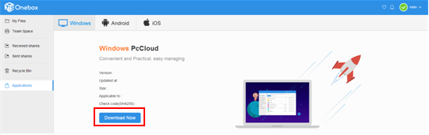

How to Install StorBox Mate Client?
<<Back to Help CenterAfter download and install the StorBox mate client, you can manage the files and folders on the cloud, upload and download documents, and manage the backup properly.

After download and install the StorBox mate client, you can manage the files and folders on the cloud, upload and download documents, and manage the backup properly.
